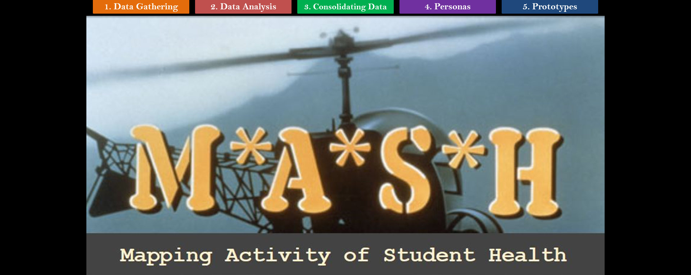
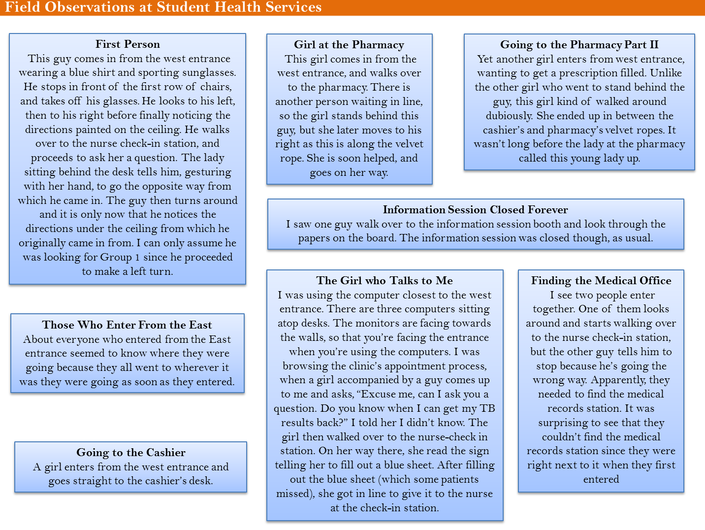
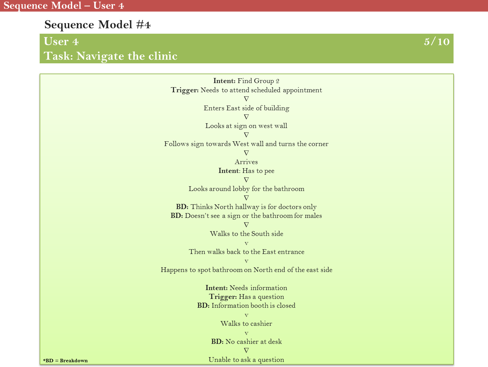
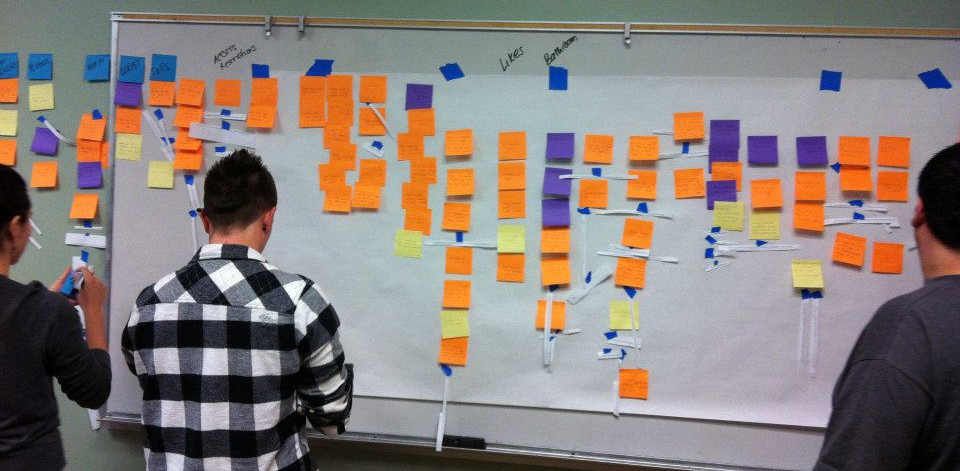

User Experience Researcher
Skills
- Rapid Contextual Design Process
- User-centered Design
- Contextual Inquiry
- Ethnography
- Affinity Diagrams
- Persona Creation
Programs
- Microsoft Word
Class Project: Cognitive Design Studio
{kind=link}
Overview
Background
For this project-based course, I had the opportunity of solving a problem by using the rapid contextual design process. Using this process, I was able to practice the skills necessary for user-centered design.
Goal
Collaborate with four other students to improve the user experience of the patients who would be navigating the UCSD health clinic.Problem
It became evident to our group that the UCSD health clinic wasn't exactly the easiest place to navigate. We learned that it was quite difficult for patient's to figure out where things were located, and where they were supposed to go. Even simple tasks, like getting an x-ray or requesting medical records were difficult to carry out, especially for first-time patients.
Given the high volume of patient's who reported feeling lost or frustrated after a trip to the clinic, our group sought out to improve their overall user experience.
Solution
Data Gathering
Following the rapid-contextual design process, we started by gathering data via contextual inquiry and field observation. In this phase, our objective was two-fold. One, we wanted to make sure we were addressing a problem that many user's experienced. Second, we were looking to establish initial requirements, which we did by conducting field observations and contextual interviews. In doing so, we were able to gain insightful information about our users, which helped us transition into our next phase, interpreting our data. {kind=link}
Data Interpretation
After collecting sufficient data on our users, we conducted an interpretation session, where we looked at our data and created sequence models in order to identify the pain points of our users. {kind=link}
Data Consolidation
After our data interpretation sessions, we focused on consolidating our data. In this phase, we looked for patterns and themes in our data by building an affinity diagram. We were then able to focus on the problems most pertinent to our users. In the end, we identified three major themes: navigation tools, landmarks, and communication. We also created personas to help us contextualize our target users. Our next steps were to consolidate our sequence models, and brainstorm design ideas based around our themes. {kind=link}
Visioning
After consolidating our data, we worked on visioning our proposed solutions through storyboards and simple hand-drawn sketches.